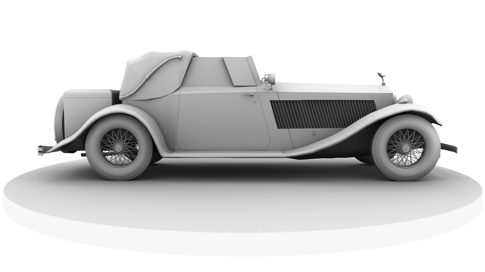
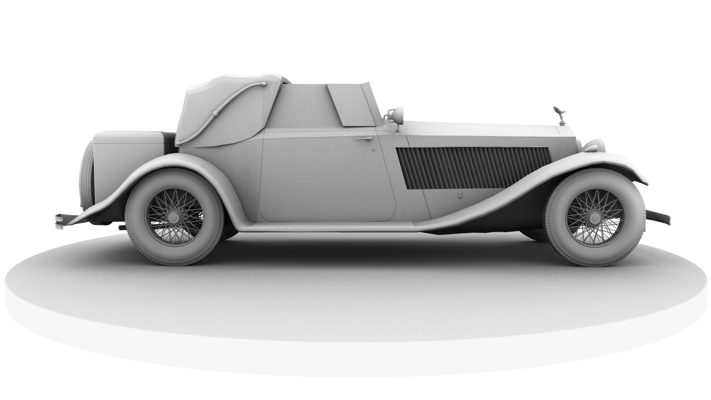

Rolls Royce
The first goal of this three-week assignment was to choose a vehicle from a provided list, I chose the 1930 Rolls-Royce Phantom II, then take the provided reference and model a low-poly version that was under 3,500 tris, trying to use each polygon wisely. My low-poly version is 3,352 tris. Using that as a base, we then had to model a high-poly version, adding as much detail we could in the time provided. My high-poly version is 293,986 tris. To finish off, I used Mental-Ray procedural textures for the beauty pass then ambient occlusion layered with wireframes. Side note: the tire treads are historically accurate! Created in Maya 2014 and rendered using Mental Ray.
Reference

Wireframe


Render
 


Render